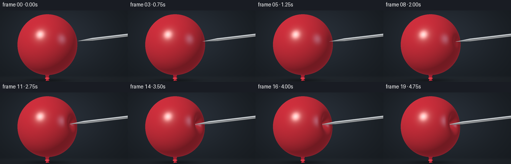
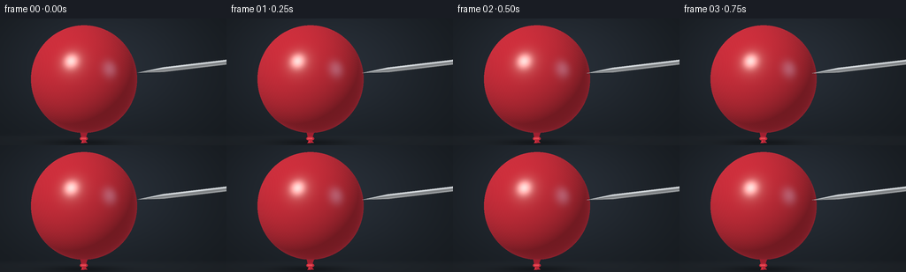

CODING AGENTS AS PIXEL WORLD MODELS
traex/GPT-6.1-Sol · mechanics_0030
点击播放 · 原生 RGB 像素
逐轮保存的候选
回放视频、检查图与代码变化。
每份候选均可单独播放。实际图片检查记录在下方工具轨迹中。
候选 01播放与检查图
点击播放 · 原生 RGB 像素


展开代码变化
--- 上一保存版本
+++ 本次保存版本
@@ -0,0 +1,195 @@
+from pathlib import Path
+import json
+import numpy as np
+from PIL import Image, ImageDraw, ImageFilter
+import artifact_io
+
+ROOT = Path(__file__).resolve().parent
+SPEC = json.loads((ROOT / 'task_spec.json').read_text())
+S = 3
+W, H = SPEC['width'] * S, SPEC['height'] * S
+xx = (np.arange(W) + .5) / W * 4.5 - 2.22
+yy = 1.265625 - (np.arange(H) + .5) / H * 2.53125
+X, Y = np.meshgrid(xx, yy)
+C = np.array([-.55, .055, 0.])
+RAD = np.array([1.055, 1.075, 1.0])
+N = np.array([.897, .105, .429]); N /= np.linalg.norm(N)
+AX = RAD*N; AX /= np.linalg.norm(AX)
+qx, qy = (X-C[0])/RAD[0], (Y-C[1])/RAD[1]
+inside = qx*qx + qy*qy < 1
+idx = np.where(inside)
+u, v = qx[idx], qy[idx]
+zbound = np.sqrt(np.maximum(0,1-u*u-v*v))
+light = np.array([-.48,.65,.78]); light /= np.linalg.norm(light)
+half = light + np.array([0,0,1]); half /= np.linalg.norm(half)
+
+
+def implicit(x, y, z, depth, width):
+ r = np.sqrt(x*x+y*y+z*z)+1e-12
+ co = np.clip((x*N[0]+y*N[1]+z*N[2])/r,-1,1)
+ # Angular-distance Gaussian produces an elastic, continuous inward dimple.
+ weight = np.exp(-(1-co)/(width*width))
+ return r - 1 + depth*weight
+
+
+def balloon(depth, width):
+ # Front-to-back analytical sampling of the deformed radial surface.
+ zhit = np.zeros_like(u)
+ alive = np.ones(len(u),dtype=bool)
+ hit = np.zeros(len(u),dtype=bool)
+ prev = zbound.copy()
+ for j in range(121):
+ if not alive.any(): break
+ k = np.flatnonzero(alive)
+ z = zbound[k]*(1-2*j/120)
+ f = implicit(u[k],v[k],z,depth,width)
+ crossing = f <= 0
+ if crossing.any():
+ q = k[crossing]
+ hi, lo = prev[q].copy(), z[crossing].copy()
+ for _ in range(12):
+ mid=(hi+lo)*.5
+ outside=implicit(u[q],v[q],mid,depth,width)>0
+ hi=np.where(outside,mid,hi)
+ lo=np.where(outside,lo,mid)
+ zhit[q]=(hi+lo)*.5
+ hit[q]=True
+ alive[q]=False
+ prev[k] = z
+ p = np.stack([u,v,zhit],axis=-1)
+ rr = np.linalg.norm(p,axis=-1)+1e-12
+ radial=p/rr[:,None]
+ co=radial@N
+ wt=np.exp(-(1-co)/(width*width))
+ grad=radial + (depth*wt/(width*width*rr))[:,None]*(N-co[:,None]*radial)
+ normal=grad/RAD
+ normal/=np.linalg.norm(normal,axis=-1)[:,None]
+ ndl=np.maximum(0,normal@light)
+ view=np.clip(normal[:,2],0,1)
+ # Latex: saturated diffuse body, broad softbox and a tight wet-looking sheen.
+ base=np.array([.64,.025,.043])
+ illum=.26+.72*ndl
+ col=base[None,:]*illum[:,None]
+ nh=np.maximum(0,normal@half)
+ broad=nh**38*.105
+ tight=nh**150*.73
+ col += (broad+tight)[:,None]*np.array([1.0,.88,.83])
+ # Soft secondary strip reflected from the right of the studio.
+ h2=np.array([.46,.18,.87]); h2/=np.linalg.norm(h2)
+ strip=np.maximum(0,normal@h2)**110*.12
+ col+=strip[:,None]*np.array([.62,.72,1.0])
+ edge=(1-view)**3
+ col+=edge[:,None]*np.array([.13,.008,.016])
+ # Local self-occlusion within the indentation, without a painted-on mark.
+ cavity=depth*wt*np.clip((1-view)*1.3,0,1)
+ col*=np.clip(1-.8*cavity,.6,1)[:,None]
+ micro=(np.sin(p[:,0]*215+p[:,1]*93)*np.sin(p[:,1]*137+p[:,2]*79))*.0013
+ col+=micro[:,None]
+ rgb=np.clip(col,0,1)**(1/2.2)*255
+ mask=np.zeros((H,W),bool); mask[idx]=hit
+ img=np.zeros((H,W,3)); img[idx]=rgb
+ zb=np.full((H,W),-np.inf); zb[idx]=np.where(hit,zhit,-np.inf)
+ return img,mask,zb
+
+
+def metal(tip):
+ # An actual 3-D sharpened cone followed by a cylindrical steel shaft.
+ q=np.stack([X-tip[0],Y-tip[1],np.full_like(X,-tip[2])],axis=-1)
+ b=q@AX
+ q2=np.sum(q*q,axis=-1)
+ az=AX[2]
+ r=.052
+ length=.59
+ slope=r/length
+ zbest=np.full((H,W),-np.inf)
+ nbest=np.zeros((H,W,3))
+ abest=np.zeros((H,W))
+ for cone in [True,False]:
+ if cone:
+ aa=1-(1+slope*slope)*az*az
+ bb=2*(q[:,:,2]-(1+slope*slope)*b*az)
+ cc=q2-(1+slope*slope)*b*b
+ else:
+ aa=1-az*az
+ bb=2*(q[:,:,2]-b*az)
+ cc=q2-b*b-r*r
+ discr=bb*bb-4*aa*cc
+ valid=discr>=0
+ root=np.sqrt(np.maximum(0,discr))
+ for zz in [(-bb+root)/(2*aa),(-bb-root)/(2*aa)]:
+ along=b+az*zz
+ ok=valid & (along>= (0 if cone else length)) & (along<= (length if cone else 4.)) & (zz>zbest)
+ pt=q.copy(); pt[:,:,2]+=zz
+ norm=pt-along[:,:,None]*AX
+ if cone: norm-=slope*slope*along[:,:,None]*AX
+ norm/=np.maximum(1e-10,np.linalg.norm(norm,axis=-1))[:,:,None]
+ zbest=np.where(ok,zz,zbest)
+ nbest=np.where(ok[:,:,None],norm,nbest)
+ abest=np.where(ok,along,abest)
+ # Reflected environment bands read as smoothly polished steel, not white plastic.
+ ny=nbest[:,:,1]; nz=nbest[:,:,2]
+ val=.095+.24*np.clip(ny+.2,0,1)+.14*np.clip(nz,0,1)
+ val+=.52*np.exp(-((ny-.56)/.19)**2)
+ val+=.30*np.exp(-((ny+.62)/.12)**2)
+ val+=.04*np.sin(ny*15+nz*2)
+ grain=.008*np.sin(abest*1000)*np.sin(ny*36)
+ val=np.clip(val+grain,.045,1)
+ col=np.stack([val*.91,val*.96,val],axis=-1)**(1/2.2)*255
+ return col,zbest
+
+
+def background():
+ glow=np.exp(-((X+.2)**2/4+(Y-.4)**2/2))
+ vignette=np.clip(1-.11*((X/2.8)**2+(Y/1.7)**2),.6,1)
+ col=np.zeros((H,W,3))
+ for c,(base,gain) in enumerate([(25,15),(30,17),(35,21)]):
+ col[:,:,c]=(base+gain*glow)*vignette
+ floor=1/(1+np.exp((Y+1.075)*50))
+ col+=floor[:,:,None]*np.array([5.,5.,5.])
+ shadow=np.exp(-((X+.55)/.74)**2-((Y+1.21)/.068)**2)*.36
+ col*=1-shadow[:,:,None]
+ return col
+
+
+def knot_draw(im):
+ # Short neck and folded tied latex nozzle, matching the balloon material.
+ d=ImageDraw.Draw(im)
+ def coords(points):
+ return [((x+2.22)/4.5*W,(1.265625-y)/2.53125*H) for x,y in points]
+ d.polygon(coords([(-.64,-.94),(-.46,-.94),(-.52,-1.125),(-.60,-1.125)]),fill=(160,31,47))
+ d.ellipse((int((-.635+2.22)/4.5*W),int((1.265625+1.095)/2.53125*H),int((-.478+2.22)/4.5*W),int((1.265625+1.175)/2.53125*H)),fill=(184,40,57))
+ d.line(coords([(-.61,-1.13),(-.51,-1.125)]),fill=(232,71,81),width=2*S)
+ d.polygon(coords([(-.575,-1.15),(-.61,-1.225),(-.48,-1.215),(-.535,-1.155)]),fill=(187,38,55))
+ d.line(coords([(-.575,-1.175),(-.585,-1.208)]),fill=(229,60,72),width=S)
+ return im
+
+
+def main():
+ bg=background()
+ frames=[]
+ for f in range(SPEC['frames']):
+ # Continuous slow approach followed by increasing elastic pressure.
+ t=f/(SPEC['frames']-1)
+ contact=.145
+ press=np.clip((t-contact)/(1-contact),0,1)
+ smooth=press*press*(3-2*press)
+ depth=.385*smooth
+ width=.137+.072*smooth
+ gap=.112*max(0,1-t/contact)
+ tip=C+RAD*N*(1-depth)+AX*gap
+ latex,mask,z=balloon(depth,width)
+ metal_rgb,metal_z=metal(tip)
+ out=bg.copy()
+ # Knot is behind the main inflated envelope.
+ base=knot_draw(Image.fromarray(np.uint8(np.clip(out,0,255))))
+ out=np.array(base,dtype=float)
+ out[mask]=latex[mask]
+ steel=np.isfinite(metal_z)&(metal_z>z)
+ out[steel]=metal_rgb[steel]
+ frame=Image.fromarray(np.uint8(np.clip(out,0,255))).resize((SPEC['width'],SPEC['height']),Image.Resampling.LANCZOS)
+ frames.append(np.array(frame))
+ print(f'Frame {f+1}/{SPEC["frames"]}: indentation {depth:.3f}',flush=True)
+ artifact_io.save(np.stack(frames),ROOT)
+
+if __name__=='__main__':
+ main()
可观测工具轨迹
实际执行的命令与返回图片。
命令 1exit 0
/bin/bash -lc 'ls -la && cat prompt.txt && cat GENERATION_RULES.md && cat task_spec.json'
命令 2exit 0
/bin/bash -lc "cat artifact_io.py && python - <<'PY' import PIL,numpy print(PIL.__version__,numpy.__version__) PY"
命令 3exit 0
/bin/bash -lc "cat > generate.py <<'PY'
from pathlib import Path
import json
import numpy as np
from PIL import Image, ImageDraw, ImageFilter
import artifact_io
ROOT = Path(__file__).resolve().parent
SPEC = json.loads((ROOT / 'task_spec.json').read_text())
S = 3
W, H = SPEC['width'] * S, SPEC['height'] * S
xx = (np.arange(W) + .5) / W * 4.5 - 2.22
yy = 1.265625 - (np.arange(H) + .5) / H * 2.53125
X, Y = np.meshgrid(xx, yy)
C = np.array([-.55, .055, 0.])
RAD = np.array([1.055, 1.075, 1.0])
N = np.array([.897, .105, .429]); N /= np.linalg.norm(N)
AX = RAD*N; AX /= np.linalg.norm(AX)
qx, qy = (X-C[0])/RAD[0], (Y-C[1])/RAD[1]
inside = qx*qx + qy*qy < 1
idx = np.where(inside)
u, v = qx[idx], qy[idx]
zbound = np.sqrt(np.maximum(0,1-u*u-v*v))
light = np.array([-.48,.65,.78]); light /= np.linalg.norm(light)
half = light + np.array([0,0,1]); half /= np.linalg.norm(half)
def implicit(x, y, z, depth, width):
r = np.sqrt(x*x+y*y+z*z)+1e-12
co = np.clip((x*N[0]+y*N[1]+z*N[2])/r,-1,1)
# Angular-distance Gaussian produces an elastic, continuous inward dimple.
weight = np.exp(-(1-co)/(width*width))
return r - 1 + depth*weight
def balloon(depth, width):
# Front-to-back analytical sampling of the deformed radial surface.
zhit = np.zeros_like(u)
alive = np.ones(len(u),dtype=bool)
hit = np.zeros(len(u),dtype=bool)
prev = zbound.copy()
for j in range(121):
if not alive.any(): break
k = np.flatnonzero(alive)
z = zbound[k]*(1-2*j/120)
f = implicit(u[k],v[k],z,depth,width)
crossing = f <= 0
if crossing.any():
q = k[crossing]
hi, lo = prev[q].copy(), z[crossing].copy()
for _ in range(12):
mid=(hi+lo)*.5
outside=implicit(u[q],v[q],mid,depth,width)>0
hi=np.where(outside,mid,hi)
lo=np.where(outside,lo,mid)
zhit[q]=(hi+lo)*.5
hit[q]=True
alive[q]=False
prev[k] = z
p = np.stack([u,v,zhit],axis=-1)
rr = np.linalg.norm(p,axis=-1)+1e-12
radial=p/rr[:,None]
co=radial@N
wt=np.exp(-(1-co)/(width*width))
grad=radial + (depth*wt/(width*width*rr))[:,None]*(N-co[:,None]*radial)
normal=grad/RAD
normal/=np.linalg.norm(normal,axis=-1)[:,None]
ndl=np.maximum(0,normal@light)
view=np.clip(normal[:,2],0,1)
# Latex: saturated diffuse body, broad softbox and a tight wet-looking sheen.
base=np.array([.64,.025,.043])
illum=.26+.72*ndl
col=base[None,:]*illum[:,None]
nh=np.maximum(0,normal@half)
broad=nh**38*.105
tight=nh**150*.73
col += (broad+tight)[:,None]*np.array([1.0,.88,.83])
# Soft secondary strip reflected from the right of the studio.
h2=np.array([.46,.18,.87]); h2/=np.linalg.norm(h2)
strip=np.maximum(0,normal@h2)**110*.12
col+=strip[:,None]*np.array([.62,.72,1.0])
edge=(1-view)**3
col+=edge[:,None]*np.array([.13,.008,.016])
# Local self-occlusion within the indentation, without a painted-on mark.
cavity=depth*wt*np.clip((1-view)*1.3,0,1)
col*=np.clip(1-.8*cavity,.6,1)[:,None]
micro=(np.sin(p[:,0]*215+p[:,1]*93)*np.sin(p[:,1]*137+p[:,2]*79))*.0013
col+=micro[:,None]
rgb=np.clip(col,0,1)**(1/2.2)*255
mask=np.zeros((H,W),bool); mask[idx]=hit
img=np.zeros((H,W,3)); img[idx]=rgb
zb=np.full((H,W),-np.inf); zb[idx]=np.where(hit,zhit,-np.inf)
return img,mask,zb
def metal(tip):
# An actual 3-D sharpened cone followed by a cylindrical steel shaft.
q=np.stack([X-tip[0],Y-tip[1],np.full_like(X,-tip[2])],axis=-1)
b=q@AX
q2=np.sum(q*q,axis=-1)
az=AX[2]
r=.052
length=.59
slope=r/length
zbest=np.full((H,W),-np.inf)
nbest=np.zeros((H,W,3))
abest=np.zeros((H,W))
for cone in [True,False]:
if cone:
aa=1-(1+slope*slope)*az*az
bb=2*(q[:,:,2]-(1+slope*slope)*b*az)
cc=q2-(1+slope*slope)*b*b
else:
aa=1-az*az
bb=2*(q[:,:,2]-b*az)
cc=q2-b*b-r*r
discr=bb*bb-4*aa*cc
valid=discr>=0
root=np.sqrt(np.maximum(0,discr))
for zz in [(-bb+root)/(2*aa),(-bb-root)/(2*aa)]:
along=b+az*zz
ok=valid & (along>= (0 if cone else length)) & (along<= (length if cone else 4.)) & (zz>zbest)
pt=q.copy(); pt[:,:,2]+=zz
norm=pt-along[:,:,None]*AX
if cone: norm-=slope*slope*along[:,:,None]*AX
norm/=np.maximum(1e-10,np.linalg.norm(norm,axis=-1))[:,:,None]
zbest=np.where(ok,zz,zbest)
nbest=np.where(ok[:,:,None],norm,nbest)
abest=np.where(ok,along,abest)
# Reflected environment bands read as smoothly polished steel, not white plastic.
ny=nbest[:,:,1]; nz=nbest[:,:,2]
val=.095+.24*np.clip(ny+.2,0,1)+.14*np.clip(nz,0,1)
val+=.52*np.exp(-((ny-.56)/.19)**2)
val+=.30*np.exp(-((ny+.62)/.12)**2)
val+=.04*np.sin(ny*15+nz*2)
grain=.008*np.sin(abest*1000)*np.sin(ny*36)
val=np.clip(val+grain,.045,1)
col=np.stack([val*.91,val*.96,val],axis=-1)**(1/2.2)*255
return col,zbest
def background():
glow=np.exp(-((X+.2)**2/4+(Y-.4)**2/2))
vignette=np.clip(1-.11*((X/2.8)**2+(Y/1.7)**2),.6,1)
col=np.zeros((H,W,3))
for c,(base,gain) in enumerate([(25,15),(30,17),(35,21)]):
col[:,:,c]=(base+gain*glow)*vignette
floor=1/(1+np.exp((Y+1.075)*50))
col+=floor[:,:,None]*np.array([5.,5.,5.])
shadow=np.exp(-((X+.55)/.74)**2-((Y+1.21)/.068)**2)*.36
col*=1-shadow[:,:,None]
return col
def knot_draw(im):
# Short neck and folded tied latex nozzle, matching the balloon material.
d=ImageDraw.Draw(im)
def coords(points):
return [((x+2.22)/4.5*W,(1.265625-y)/2.53125*H) for x,y in points]
d.polygon(coords([(-.64,-.94),(-.46,-.94),(-.52,-1.125),(-.60,-1.125)]),fill=(160,31,47))
d.ellipse((int((-.635+2.22)/4.5*W),int((1.265625+1.095)/2.53125*H),int((-.478+2.22)/4.5*W),int((1.265625+1.175)/2.53125*H)),fill=(184,40,57))
d.line(coords([(-.61,-1.13),(-.51,-1.125)]),fill=(232,71,81),width=2*S)
d.polygon(coords([(-.575,-1.15),(-.61,-1.225),(-.48,-1.215),(-.535,-1.155)]),fill=(187,38,55))
d.line(coords([(-.575,-1.175),(-.585,-1.208)]),fill=(229,60,72),width=S)
return im
def main():
bg=background()
frames=[]
for f in range(SPEC['frames']):
# Continuous slow approach followed by increasing elastic pressure.
t=f/(SPEC['frames']-1)
contact=.145
press=np.clip((t-contact)/(1-contact),0,1)
smooth=press*press*(3-2*press)
depth=.385*smooth
width=.137+.072*smooth
gap=.112*max(0,1-t/contact)
tip=C+RAD*N*(1-depth)+AX*gap
latex,mask,z=balloon(depth,width)
metal_rgb,metal_z=metal(tip)
out=bg.copy()
# Knot is behind the main inflated envelope.
base=knot_draw(Image.fromarray(np.uint8(np.clip(out,0,255))))
out=np.array(base,dtype=float)
out[mask]=latex[mask]
steel=np.isfinite(metal_z)&(metal_z>z)
out[steel]=metal_rgb[steel]
frame=Image.fromarray(np.uint8(np.clip(out,0,255))).resize((SPEC['width'],SPEC['height']),Image.Resampling.LANCZOS)
frames.append(np.array(frame))
print(f'Frame {f+1}/{SPEC[\"frames\"]}: indentation {depth:.3f}',flush=True)
artifact_io.save(np.stack(frames),ROOT)
if __name__=='__main__':
main()
PY
OPENBLAS_NUM_THREADS=1 python generate.py"命令 4exit 0
/bin/bash -lc "python - <<'PY'
from pathlib import Path
import numpy as np
from PIL import Image
p=Path('.')
a=np.load('pixels.npz')['pixels']
assert a.shape==(144,256,20)
fs=sorted((p/'frames').glob('*.png'))
assert len(fs)==20
assert all(Image.open(f).mode=='RGB' and Image.open(f).size==(256,144) for f in fs)
assert (p/'index.html').is_file() and (p/'inspection.png').is_file()
print('Validated: 20 RGB frames, 256Ã144; all required artifacts exist.')
print('Artifacts:', ', '.join(x.name for x in [p/'pixels.npz',p/'index.html',p/'inspection.png',p/'generate.py']))
PY"保存候选 1 份；完成命令 4 次；可验证图片返回 0 张。原始 API 响应与完整日志保留在本地。